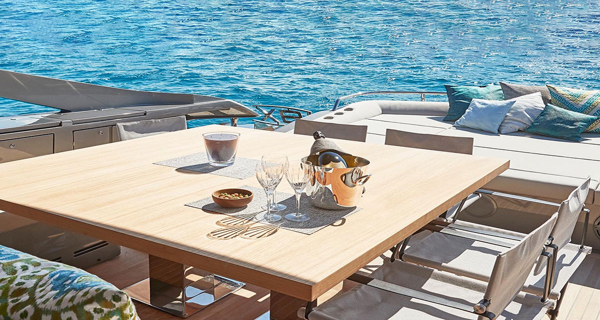

Luxury Yacht Charters in Ibiza: The Ultimate Guide Blog
Welcome to the premier source for yacht charter enthusiasts seeking the pinnacle of luxury sailing in Ibiza. Our blog offers the latest news, detailed guides, and expert commentary on the world of high-end yachting. Dive into the heart of Ibiza's yacht charters, celebrated for its stunning coastlines and dynamic sailing scene. Discover new yacht launches, gain exclusive chartering insights, and uncover the secrets behind the opulent yachting lifestyle. Join us as we navigate the best of Ibiza's yachting culture, highlighting the innovations and traditions that make it a premier global destination.
Discover exclusive destinations, insider yachting tips, and the latest in yacht design and technology. Whether you're charting your next luxury voyage or daydreaming about the sea's tranquil embrace, we're here to bring the essence of high-end yachting directly to you.
Embark with us on an unparalleled journey of exploration and elegance. Browse our selection of articles to begin your adventure into the world of luxury yacht charters.
Delve into our curated content from the side panel and discover the pinnacle of yachting excellence. Your journey towards the ultimate yachting lifestyle starts here.